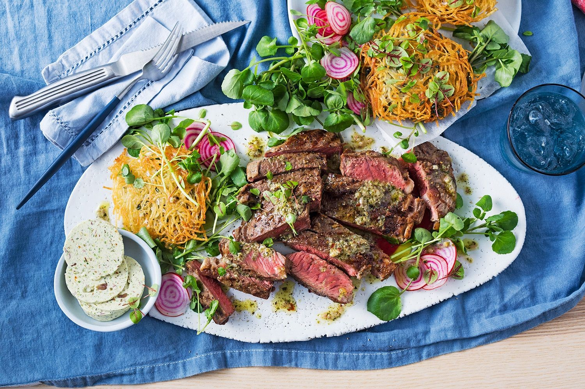

Spicy chorizo pasta with harissa and yoghurt
METHOD
1.Remove the steaks from fridge to come to room temperature.
2.For the anchovy butter, place all ingredients in a small food processor, whiz until combined. Place butter on a square of baking paper and roll into a log. Chill.
3.To make quick fries, combine grated potato and ½ tsp salt flakes in a colander. Squeeze out as much liquid as possible. Add thyme and combine.
4.Heat 1cm oil in a large non-stick pan over medium-low heat. In batches, spoon 1/3 cup portions of potato mixture into the pan. Use a spatula to flatten each to a 10cm disc. Cook 3-4 minutes each side until golden and cooked through. Transfer to a plate lined with paper towel, and loosely cover with foil.
5.Heat a barbecue or chargrill to a high heat and drizzle with a little oil. Season steaks and cook, turning, for 12 minutes for medium-rare or until cooked to your liking. Transfer to a tray, loosely covered with foil, and rest for 5 minutes.
6.Meanwhile, in a small bowl, combine watercress and thinly sliced beetroot.
7.To serve, thickly slice steaks and place on a serving platter with sliced anchovy butter, fries, and watercress and beetroot salad.